Vítej na mé stránce
s Android hrami
Všechny hry a projekty, které tady najdeš, vytvářím sám. Zaměřuji se na hry psané převážně v nativním kódu, abych dosáhl maximální optimalizace a plynulého chodu i na starších telefonech.
Kromě her sem postupně přidávám i užitečné návody – například jak si správně nastavit VR Box, aby zážitek z virtuální reality byl co nejlepší, nebo jak propojit Bluetooth ovladač pro Labyrint ve VR.
V levém menu si jednoduše vyber – rozklikni si libovolnou hru a prohlédni si žebříčky, stažení nebo detailní informace. Sekce "Tipy a triky" je připravená pro všechny, kdo chtějí z VR zařízení vytěžit maximum – od nastavení ostření až po opravu opotřebované pěnové podložky.
Pokud se chceš dozvědět víc o mně, klikni na "O mně".
O mně
Kdo jsem
Jsem nezávislý tvůrce, který vytváří originální hry pro Android. Nejsem firma ani tým lidí — jen člověk, kterého baví tvořit vlastní projekty.
Proč tvořím
Tvorba her je pro mě způsob, jak spojit kreativitu, techniku a zábavu. Baví mě, když se nápad promění v něco, co si lidé stáhnou, zahrají a užijí.
Jak tvořím
Hry tvořím po práci ve svém volném čase. Každý projekt vzniká postupně — od prvního nápadu, přes grafiku, až po samotné programování.
Co tvořím
Zaměřuji se na menší, originální projekty, které jsou snadné na ovládání a dostupné každému. Moje hry neobsahují skryté funkce, sledování ani podvodné prvky.
Moje první hra
Moje úplně první hra, kterou jsem vytvořil od nuly, se jmenuje Labyrun a je dostupná na Google Play. Je to důkaz, že za projekty stojí skutečný tvůrce, ne anonymní podvodník. Labyrun je jednoduchá, čistá a bezpečná hra — první krok do světa mobilního vývoje.
Proč už nepublikuji na Google Play
Moje hry na Google Play nebyly vidět — ztrácely se mezi tisíci jiných projektů a téměř nikdo je nenašel. Proto jsem se rozhodl jít vlastní cestou a budovat místo, kde moje hry opravdu dostanou prostor. Publikuji je na své vlastní webové stránce, případně na platformách jako itch.io nebo APKPure.
Proč tvořím VR hry
Kvalitních a zároveň free VR her pro Android je velmi málo — a já to chci změnit. VR Box je levný způsob, jak si kdokoli může vyzkoušet virtuální realitu doma, aniž by musel investovat tisíce do drahých VR headsetů. Chci přiblížit svět VR i lidem, kteří si nemohou dovolit drahé zařízení, a ukázat, že i jednoduché mobilní VR může být zábavné, dostupné a bezpečné.
Nejsem hacker
Nepíšu škodlivý kód, nesbírám data a nesnažím se hráče nijak manipulovat. Moje hry neobsahují malware, podvodné prvky ani nic, co by poškozovalo zařízení. Jsem tvůrce, ne hacker — a bezpečnost hráčů je pro mě zásadní.
Zásady bezpečnosti
Každá moje hra je navržena tak, aby byla čistá, bezpečná a férová. Neukládám citlivé informace, nevyžaduji osobní údaje a nepoužívám žádné sledovací systémy.
Kontakt
Pokud máš dotaz nebo chceš nahlásit problém, můžeš mi napsat na: martinegames@centrum.cz
BeatShift VR
EASY
| 1. 🥇 | MartinArtist-Session1_Track14 | 1 010 |
| 2. 🥈 | MartinArtist-Session1_Track14 | 1 000 |
| 3. 🥉 | TestHracTestSong | 999 |
| 4. | TestHracTestSong | 999 |
| 5. | TestHracTestSong | 999 |
| 6. | TestHracTestSong | 999 |
| 7. | TestHracTestSong | 999 |
| 8. | TestHracTestSong | 999 |
| 9. | TestHracTestSong | 999 |
| 10. | TestHracTestSong | 999 |
| 11. | TestHracTestSong | 999 |
| 12. | TestHracTestSong | 999 |
| 13. | MartinVzpomeneš si | 0 |
NORMAL
| 1. 🥇 | m20 Scooter - Weekend | 4 360 |
| 2. 🥈 | MartinVzorná_Holka | 3 830 |
| 3. 🥉 | myt1s.com - The Offspring Pretty Fly For A White Guy Official Music Video | 2 500 |
| 4. | myt1s.com - The Offspring Pretty Fly For A White Guy Official Music Video | 2 500 |
| 5. | Martinukazka | 130 |
| 6. | Martinukazka | 130 |
| 7. | Martinukazka | 130 |
| 8. | Martinukazka | 130 |
HARD
| 1. 🥇 | MartinVzpomeneš si | 3 160 |
| 2. 🥈 | MartinVzpomeneš si | 3 160 |
| 3. 🥉 | MartinVzpomeneš si | 3 160 |
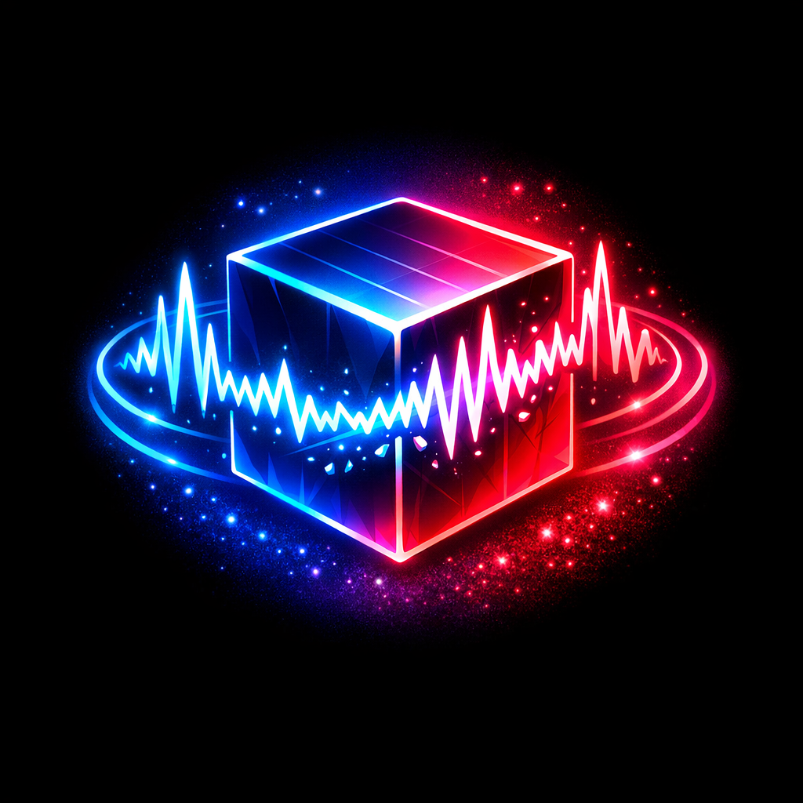
Technické specifikace
Podporované OS: Android 7.0 (Nougat) až Android 16.
Ovládání: Hra využívá Gyroskop vašeho telefonu.
Režimy: Plná podpora VR (Cardboard) i klasického režimu bez brýlí.
Podporované jazyky: Čeština, Angličtina, Němčina, Portugalština, Španělština, Slovenština, Polština, Ukrajinština, Ruština.
Bezpečnost a věk
Doporučený věk: 12+ (vzhledem k použití VR technologie a intenzivním vizuálním efektům).
Tato aplikace není virus. Neobsahuje žádný škodlivý kód a nevyžaduje přístup k vašim soukromým datům (pouze přístup k hudebním souborům, které si sami vyberete ke hře).
Galerie
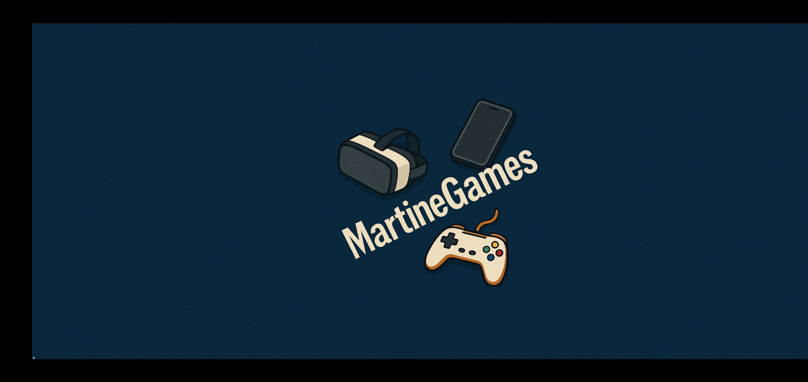
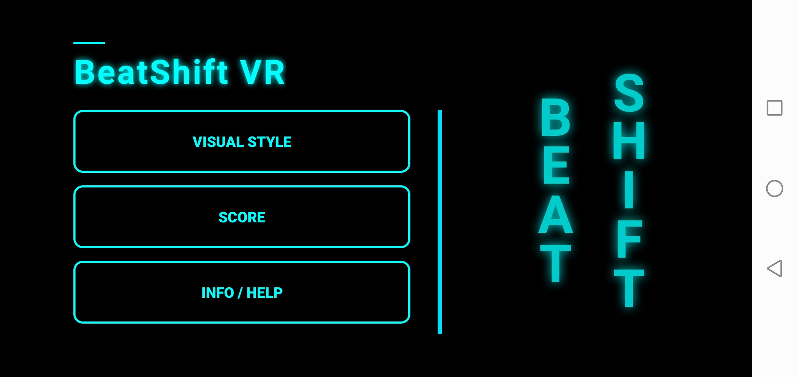
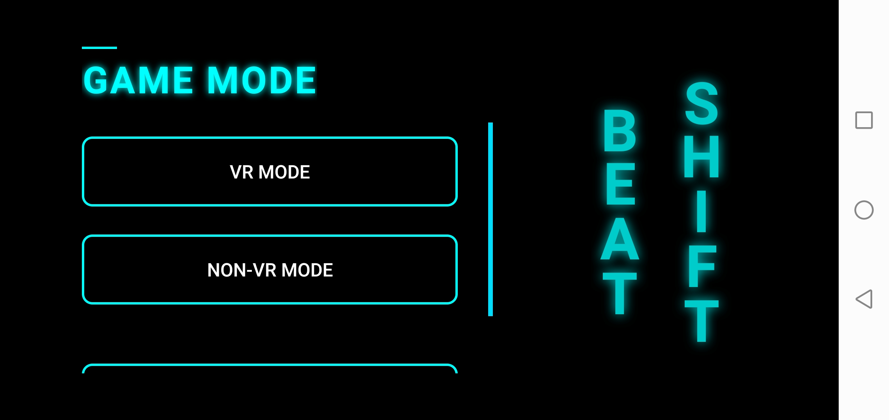
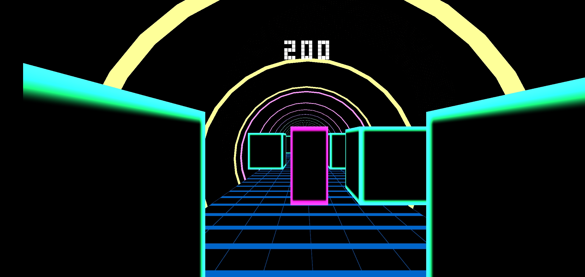
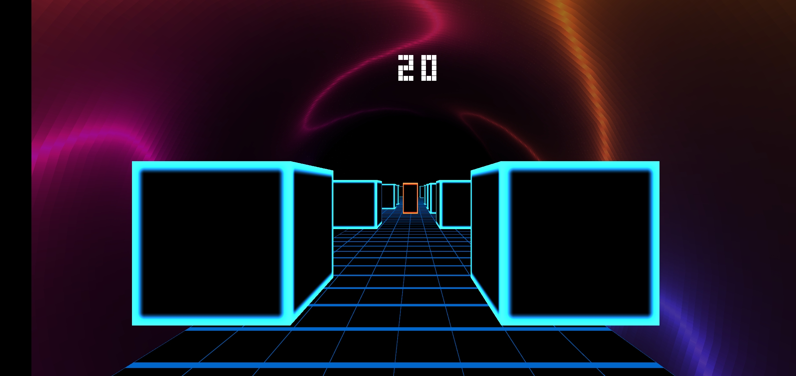
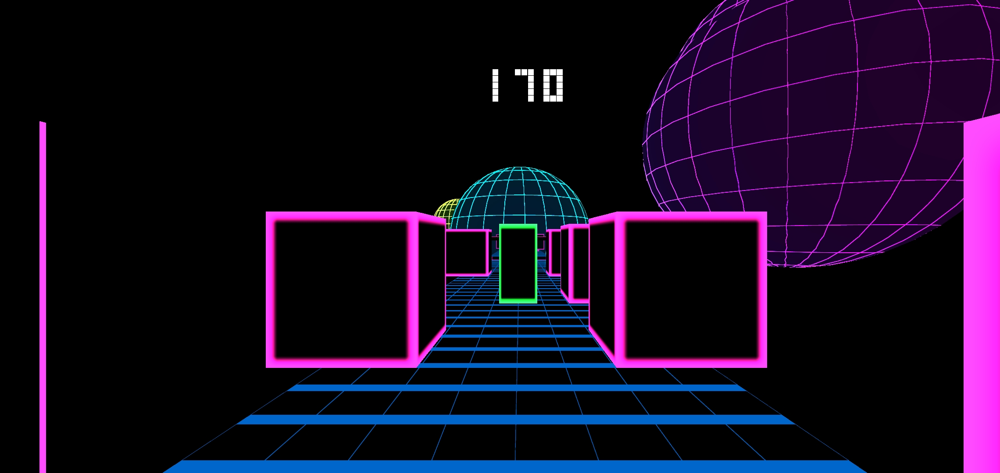
Popis hry
Beat Shift ti umožní proměnit jakoukoli MP3 skladbu uloženou v telefonu v jedinečnou rytmickou výzvu. Stačí si vybrat píseň, zvolit vizuální styl a hra sama vygeneruje překážky přesně podle rytmu hudby. Každá skladba tak vytvoří úplně nový level.
Vyhýbej se nárazům a nech se vtáhnout do světa, kde hudba řídí úplně všechno.
Ochrana soukromí
1. SBĚR DAT: Tato aplikace nesbírá žádné osobní údaje uživatelů (jako e-mail, jméno nebo telefonní číslo).
2. PŘEZDÍVKA A SKÓRE: Pokud se rozhodnete sdílet své skóre, bude vaše zvolená přezdívka a dosažené body odeslány na veřejný žebříček. Tato volba je dobrovolná.
3. MULTIMÉDIA: Aplikace vyžaduje přístup k úložišti pouze pro účely uložení vygenerovaného videa z vaší hry a pro přístup k hudbě, kterou si sami zvolíte ke hraní.
4. SENZORY: Hra využívá gyroskop vašeho zařízení pro sledování pohybu. Tato data nejsou nikde ukládána ani odesílána.
5. DOPORUČENÝ VĚK: Hra je doporučena pro hráče od 12 let. U mladších hráčů se doporučuje dohled dospělé osoby a kratší herní relace z důvodu používání VR technologie.
6. KONTAKT: V případě dotazů mě kontaktujte na martinegames@centrum.cz.
PŘIPRAVEN KE STARTU?
Stáhni si nejnovější verzi přímo od vývojáře.
STÁHNOUT APK
Verze 1.0.4 | Velikost: cca 45 MB
Labyrint 3D/VR
Technické specifikace
Podporované OS: Android 7.0 (Nougat) až Android 16.
Ovládání: Dotyk (levý/pravý prst) nebo Gamepad pro VR.
Režimy: Závod, Plížení, Hledání pokladů, Multiplayer přes Bluetooth.
Podporované jazyky: Čeština, Angličtina, Němčina, Portugalština, Španělština, Slovenština, Polština, Ukrajinština, Ruština.
Bezpečnost a věk
Doporučený věk: 12+ (vzhledem k použití VR technologie a intenzivním vizuálním efektům).
Tato aplikace není virus. Neobsahuje žádný škodlivý kód a nevyžaduje přístup k vašim soukromým datům.
Galerie
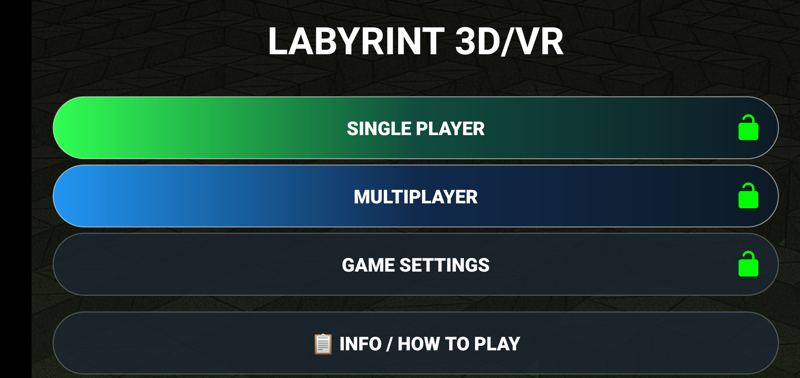
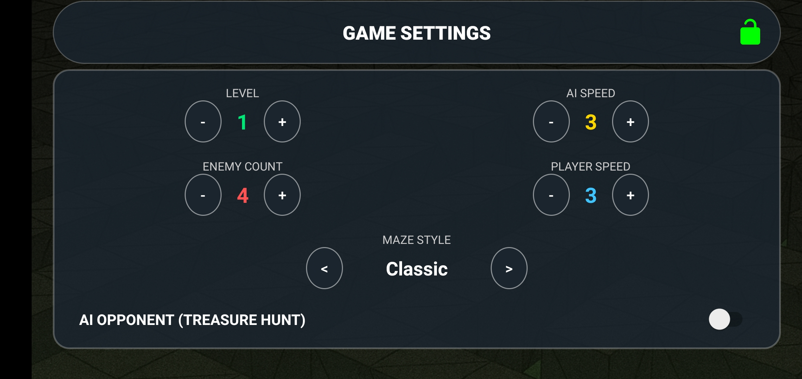
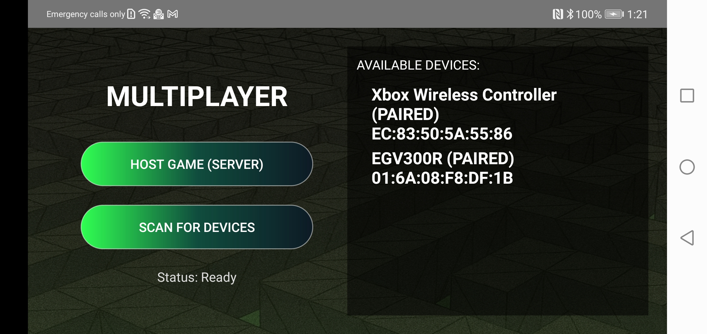
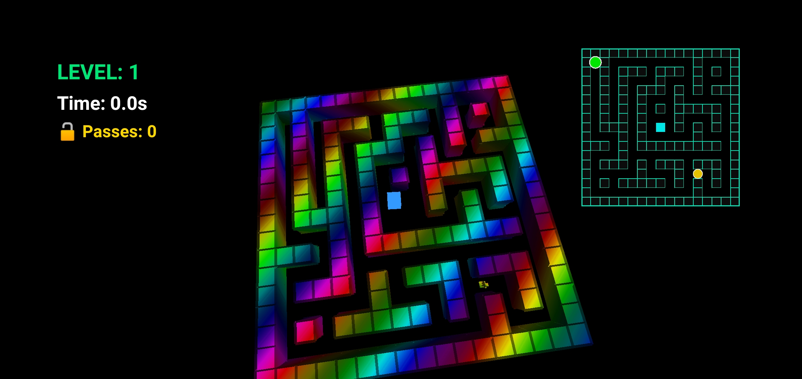
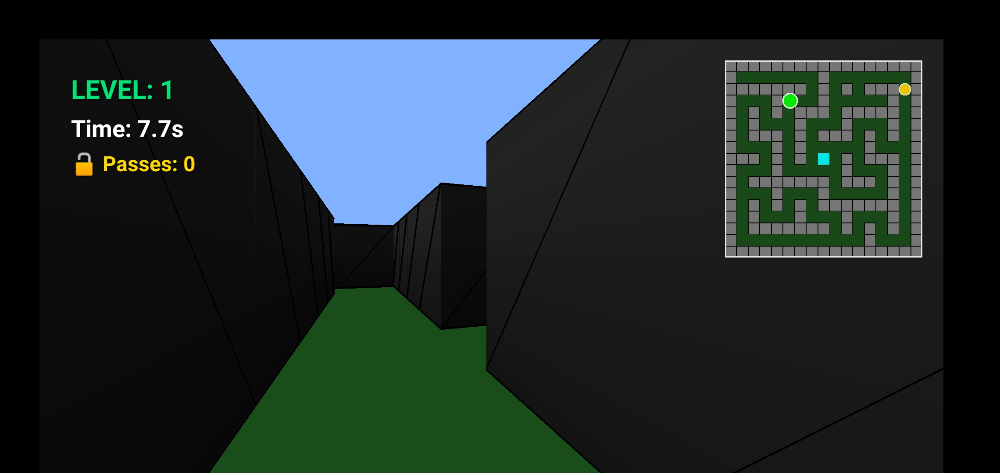
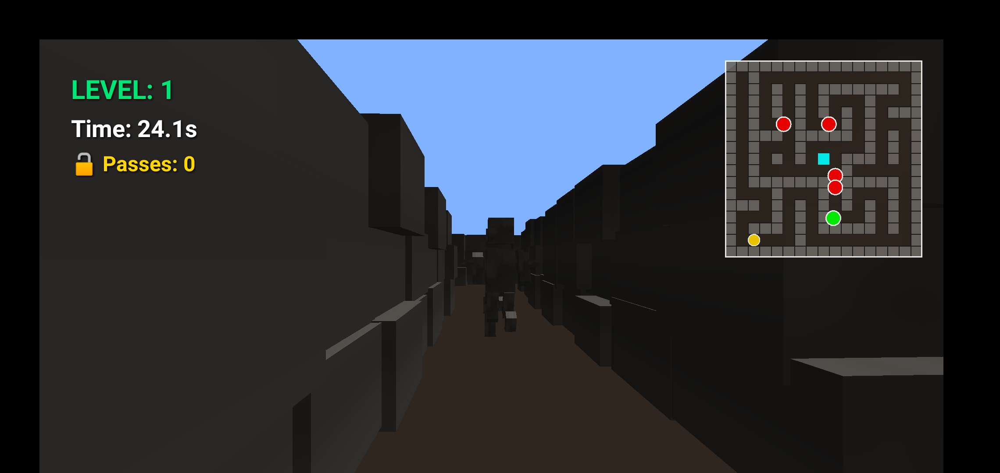
Popis hry
Vstup do Labyrintu 3D/VR, kde každý krok může být tvůj poslední. Čekají tě temné chodby, nepřátelé, poklady a závod s časem.
Hraj sám, nebo se spoj s kamarádem přes Bluetooth multiplayer – každý na svém telefonu, ve VR i bez VR.
Vyber si jeden z režimů:
- Závod na čas – sprint skrz bludiště.
- Plíživka – tichý postup mezi nepřáteli.
- Volná hra – relaxační průzkum.
- Hledač pokladu – sbírej diamanty a unikni.
VR ti dá maximální atmosféru, klasické ovládání zase pohodlí. Labyrint čeká – troufneš si?
Ochrana soukromí
1. SBĚR DAT: Tato aplikace nesbírá žádné osobní údaje uživatelů (jako e-mail, jméno nebo telefonní číslo).
2. REKLAMY: Aplikace používá reklamní síť Start.io, která může sbírat anonymní identifikátor zařízení pro cílení reklam.
3. BLUETOOTH: Bluetooth se používá výhradně pro multiplayer. Žádná data nejsou odesílána na servery.
4. SENZORY: Hra využívá gyroskop pro VR režim. Tato data nejsou nikde ukládána ani odesílána.
5. PLATBY: Při nákupu Premium verze jsou platební údaje zpracovávány přes Stripe. My je neukládáme.
6. DOPORUČENÝ VĚK: Hra je doporučena pro hráče od 12 let. U mladších hráčů se doporučuje dohled dospělé osoby.
7. KONTAKT: V případě dotazů mě kontaktujte na martinegames@centrum.cz.
PŘIPRAVEN KE STARTU?
Stáhni si nejnovější verzi přímo od vývojáře.
STÁHNOUT APK
Verze 1.0.0 | Velikost: cca 35 MB
💡 Tipy a triky
1. Co dělat, když VR Box nejde zaostřit a obraz je stále rozmazaný
1. Zkontrolujte základní nastavení
- Posuňte čočky na šířku vašich očí (IPD) – většina VR Boxů má na to buď kolečko nebo posuvnou páčku. Některé starší modely mají pevnou pozici a tam je to složitější.
- Pokud má váš VR Box kolečko na ostření: otáčejte jím, dokud nenajdete nejostřejší bod.
- Pokud má váš VR Box posuvnou páčku: zkuste ji posouvat dopředu/dozadu, dokud nenajdete ostrý obraz.
2. Pokud to nestačí, přidejte distanční vrstvu
- Někdy je problém v tom, že máte obličej příliš blízko k čočkám.
- Řešení: vystřihněte novou pěnovou výplň podle tvaru VR Boxu. Můžete použít:
- Novou pěnu – koupit v hobby marketu, vystřihnout podle šablony.
- Starý pěnový obal – z krabice od elektroniky.
- Látku složenou do vrstev – jako provizorní řešení.
- Nalepte ji na stávající pěnu (nebo na její místo) tak, aby přidala 1–2 cm navíc.
- Tím se vaše oči dostanou do správné vzdálenosti od čoček a obraz se výrazně zlepší.
3. Materiály, které NEPOUŽÍVAT
- Pěna s velkými bublinami – propouští světlo dovnitř a kazí atmosféru (všude vidíte okraje).
2. Bluetooth ovladač pro Labyrint 3D/VR
Pokud hrajete Labyrint ve VR režimu, telefon je zasunutý v brýlích a dotyk na displej nefunguje. K pohybu v labyrintu proto potřebujete Bluetooth ovladač.
- Stačí obyčejný Bluetooth gamepad nebo joystick.
- Ovladač spárujte s telefonem (přes Nastavení → Bluetooth).
- Hra vás upozorní, že ve VR režimu je ovladač potřeba.
Nepíšu konkrétní tlačítka, protože každý ovladač je jiný – levný gamepad z AliExpressu má jiné mapování než ovladač od Xboxu. Hra si všechno načte sama.
Stačí si vyzkoušet tlačítka na ovladači a zjistit, které z nich reaguje na co – pohyb, interakce atd.
3. Labyrint – minimapa a orientace ve VR
- V režimu bez VR máte k dispozici minimapu, která vám pomáhá orientovat se v labyrintu.
- Ve VR režimu by minimapa rušila a kazila ponor do hry. Proto je ve VR nahrazena označením cesty na zemi.
- Pokud ve VR chcete znát směr, vyzkoušejte tlačítka na ovladači – jedno z nich aktivuje označení cesty přímo na zemi před vámi.
4. Čištění čoček – na co si dát pozor
VR Box používá plastové čočky, které se snadno poškrábou.
- Nikdy nepoužívejte suchý hadřík – prachové částice poškrábou povrch.
- Používejte mikrovláknový hadřík (na brýle).
- Jemnými krouživými pohyby čistěte.
- Pokud jsou čočky mastné, hadřík lehce navlhčete destilovanou vodou. Nikdy nepoužívejte alkohol ani čisticí prostředky – zničily by povrchovou úpravu.
5. Proč je obraz v VR Boxu méně ostrý než v drahých VR headsetech
- VR Box používá plastové čočky, drahé VR headsety používají skleněné s antireflexní vrstvou.
- To je prostě daň za nízkou cenu.
- Ale i s VR Boxem se dá užít spousta zábavy, když si ho správně nastavíte podle mých tipů.
6. Generování videa v BeatShift – proč to nefunguje na všech telefonech
BeatShift umí po dohrání levelu vygenerovat video z vaší hry. Je to skvělá funkce pro sdílení vašich výkonů s přáteli.
Proč ale nefunguje na všech telefonech?
- Generování videa je velmi náročný proces – vyžaduje hodně výkonu procesoru a grafického čipu.
- Na trhu jsou stovky různých modelů telefonů s různým výkonem. Není možné, aby generování videa fungovalo na každém z nich.
Jak to hra řeší?
- Hra před spuštěním generování zkontroluje, jestli je vaše zařízení dostatečně výkonné.
- Pokud je telefon velmi slabý, hra generování rovnou odmítne – předejde se tím pádu aplikace nebo zamrznutí telefonu.
- Pokud je zařízení na hranici limitu, hra vám umožní generování zkusit – existuje šance, že to na vašem telefonu přece jen poběží.
Co to znamená pro vás?
- Pokud vám generování videa nefunguje, není to chyba hry – je to ochrana vašeho zařízení.
- Můžete to zkusit na výkonnějším telefonu, pokud ho máte k dispozici.